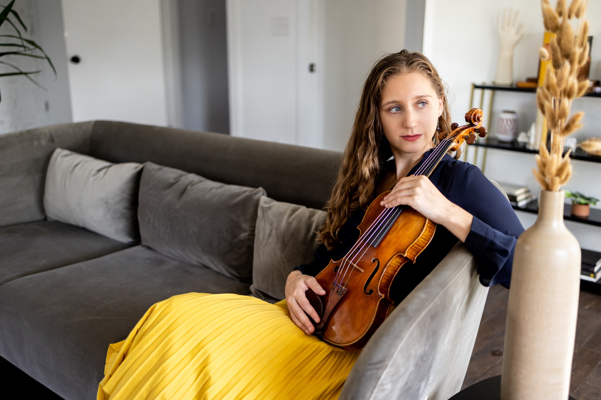

About Let Music Speak
Let Music Speak
Let Music Speak is a nonprofit arts organization creating opportunities for professional musicians to perform and for communities to experience live music.
The organization grew out of PaoliFest, a free music and arts festival founded in the small Southern Indiana town of Paoli. For five years, PaoliFest brought professional musicians and artists together with families, students, and community members for performances and shared creative experiences.
That work continues today through PaoliFest: Echoes, concerts, workshops, community outreach, and new programs that bring professional musicians directly to audiences.

Jordana Greenberg, Director
Let Music Speak is directed by professional violinist Jordana Greenberg.
Jordana’s career has taken her from concert halls and orchestra stages to festivals, schools, community spaces, and collaborative projects across musical genres.
Her work with Let Music Speak grows from both sides of that experience: knowing extraordinary musicians who deserve opportunities to play, and knowing communities that deserve opportunities to hear them.
Our Mission
Let Music Speak creates community through music and the arts by connecting artists, audiences, and organizations through performances, workshops, collaborations, and outreach.
Let Music Speak is a 501(c)(3) nonprofit organization.